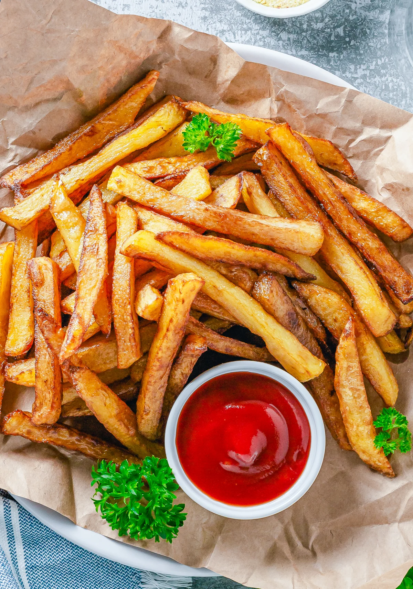

Delicious Chips Reciepe

Ingredients
- potatoes.
- Grandnut oil.
- salt.
Steps
- Step 1: Assemble Materials Needed.
- Step 2: Wash Potatoes.
- Step 3: Cut of Ends and "Eyes" .
- Step 4: Slicing the Potatoes.
- Step 5: Pour Oil Into Deep Fast Fryer.
a
- Step 6: Turn Fryer to 375 Degrees.
- Step 7: Cook Potatoes Until Golden Brown.
Watch Tutorial
Watch this video for asimilar reciepe
Chips video reciepe
Prep Time:10 minutes Cook Time: 15 Minutes
Linwood Restaurant
Thank you